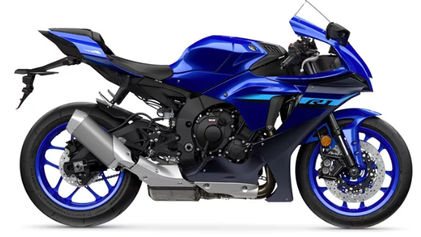

Yamaha R1
Inspirada en las motos de MotoGP, la Yamaha R1 es una superbike japonesa que combina potencia y tecnología. Su motor de 998 cc y su sistema electrónico avanzado garantizan una experiencia de conducción impresionante, tanto en carretera como en circuito.